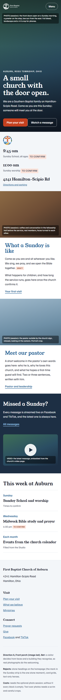
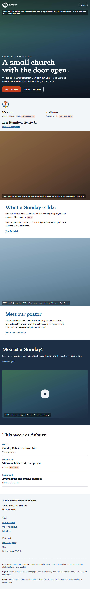
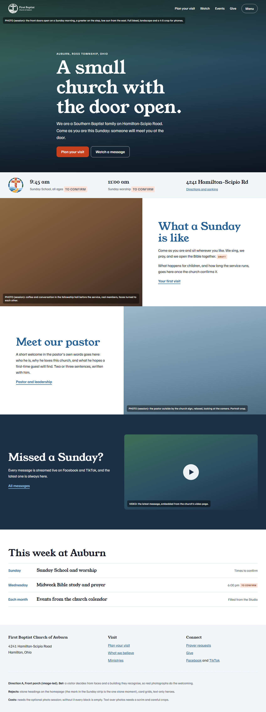
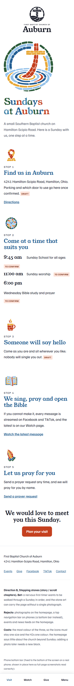
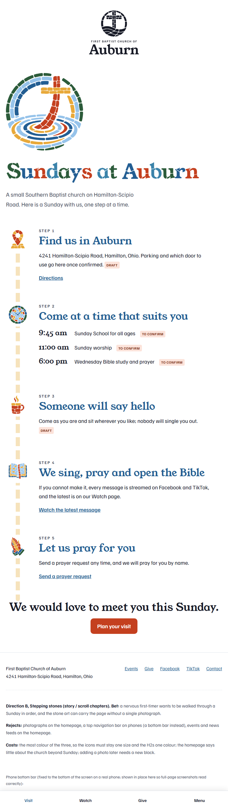
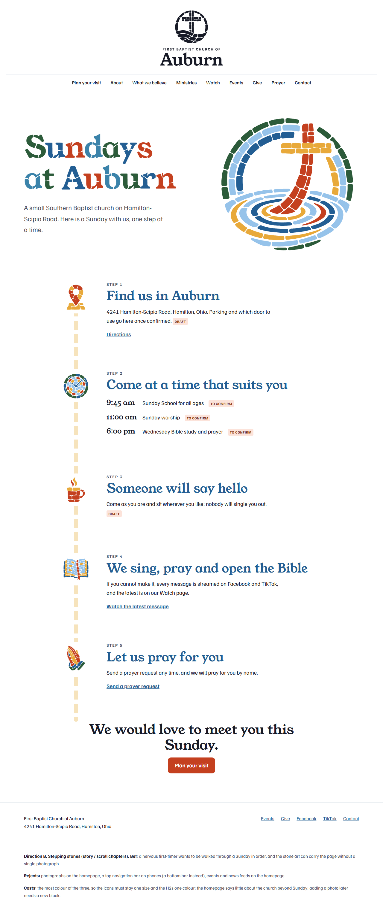
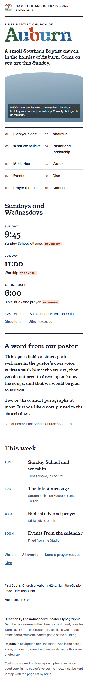
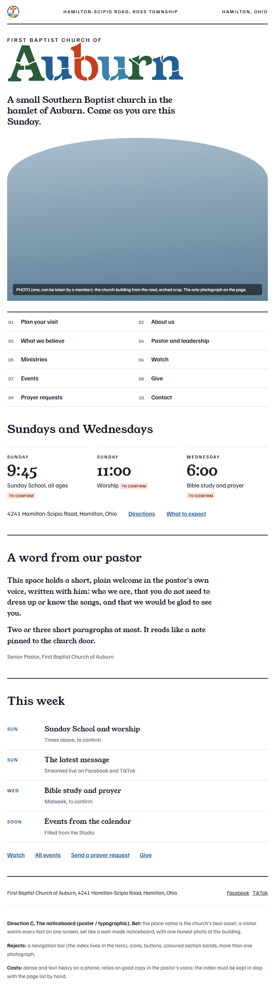
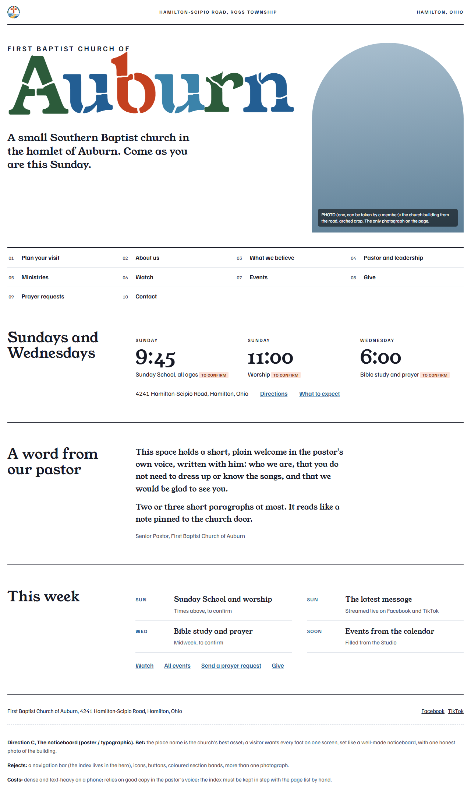

Homepage directions, First Baptist Church of Auburn
Three ways to cope with few photographs. Light shots shown; dark shots sit beside them in shots/. Details in README.md.
A. Front porch (image-led)
Bet: real photographs of faces and the building do the welcoming.
Rejects: stone headings on the homepage, card grids, text-only heroes.
Costs: needs the optional photo session; empty without it.



B. Stepping stones (story / scroll chapters)
Bet: walk a first-timer through a Sunday step by step; the stone art carries the page with no photographs.
Rejects: homepage photographs, a top nav bar on phones, events and news feeds.
Costs: the most colour of the three; says little beyond Sunday.



C. The noticeboard (poster / typographic)
Bet: the place name leads; every fact on one screen with one honest photo of the building.
Rejects: a nav bar, icons, buttons, colour bands, more than one photograph.
Costs: dense on a phone; depends on real copy in the pastor's voice.


